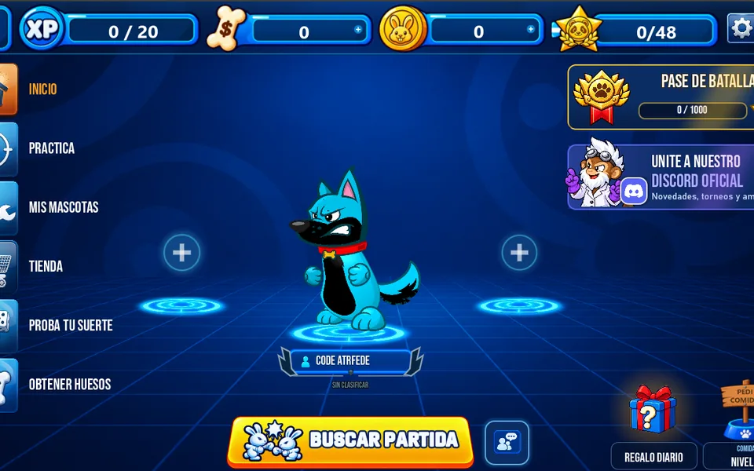

Juego multijugador · en equipo
WO Definitive Edition
Juego 2D de artillería por turnos creado en Godot entre tres amigos. Las partidas en línea reúnen hasta seis jugadores y combinan armas, escenarios destructibles y mascotas personalizables.
Mi rol: desarrollé funciones en todas las áreas: la jugabilidad por turnos, el sistema de armas, el multijugador en línea, los escenarios destructibles y las mascotas. También el bot de la comunidad en Discord.
- Godot
- Multijugador en línea
- Trabajo en equipo